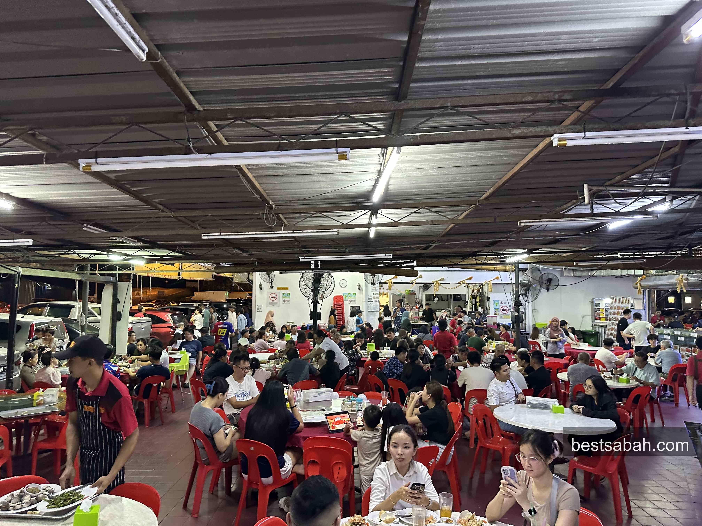
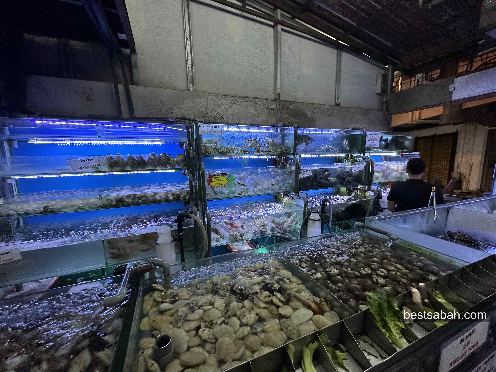
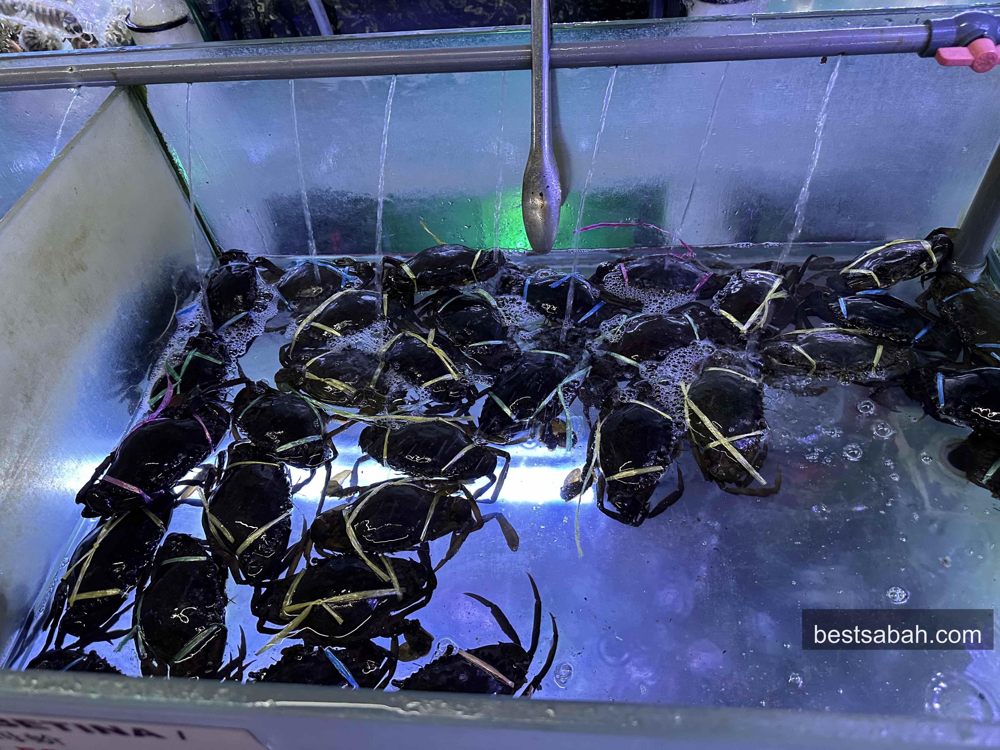
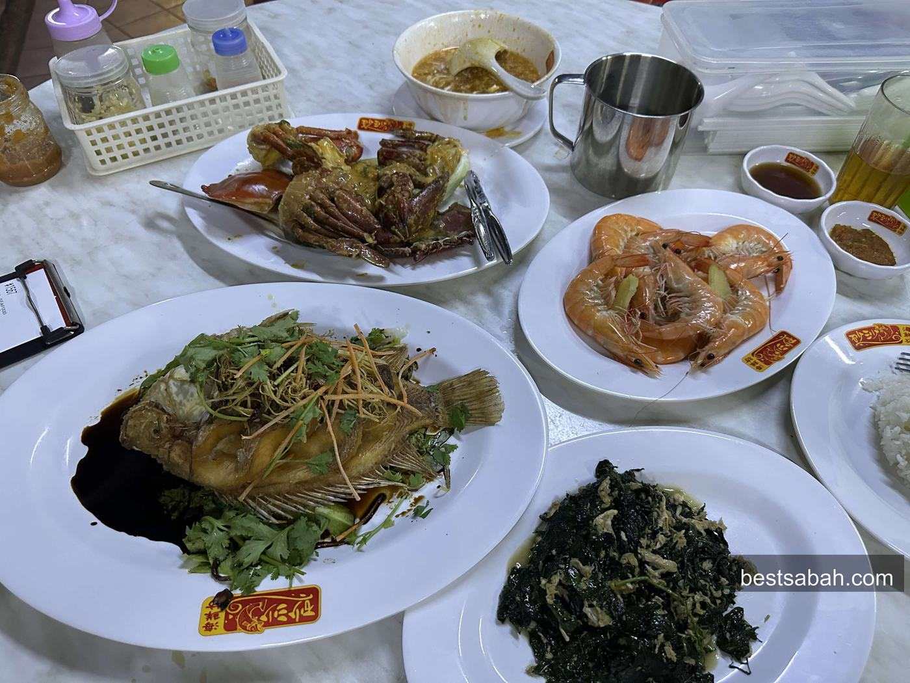
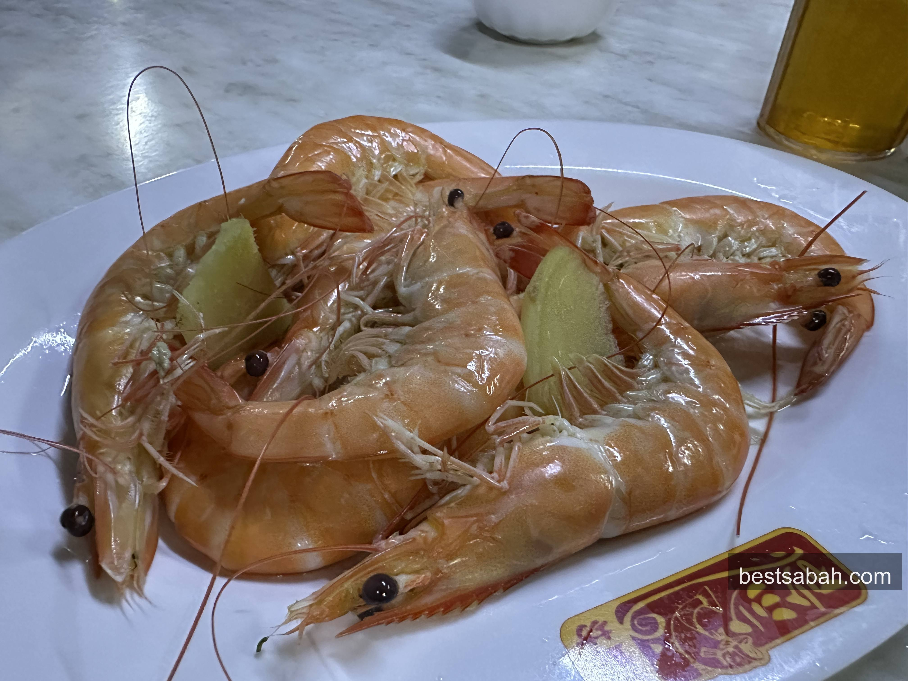
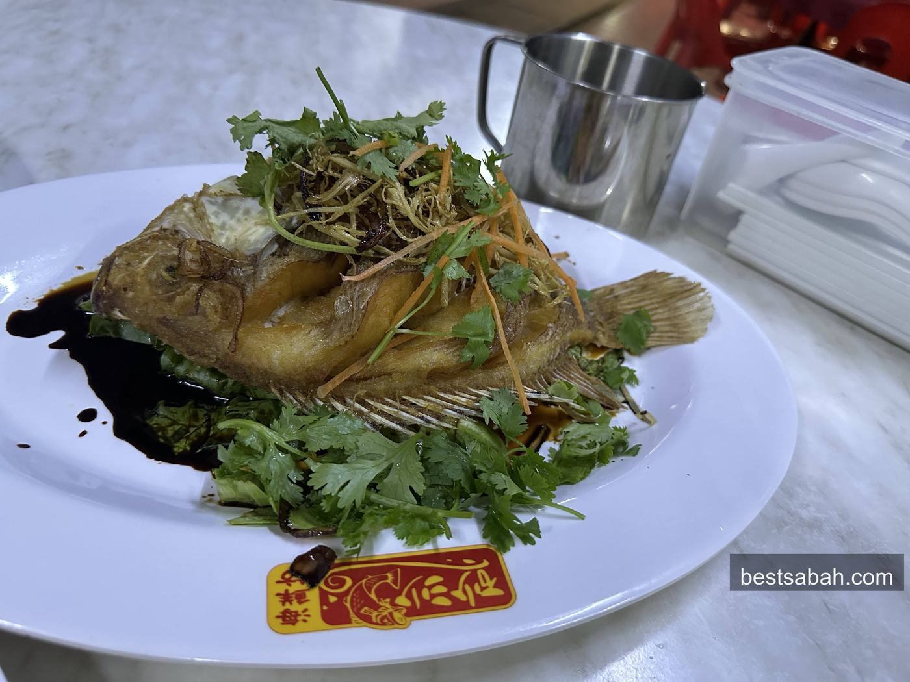
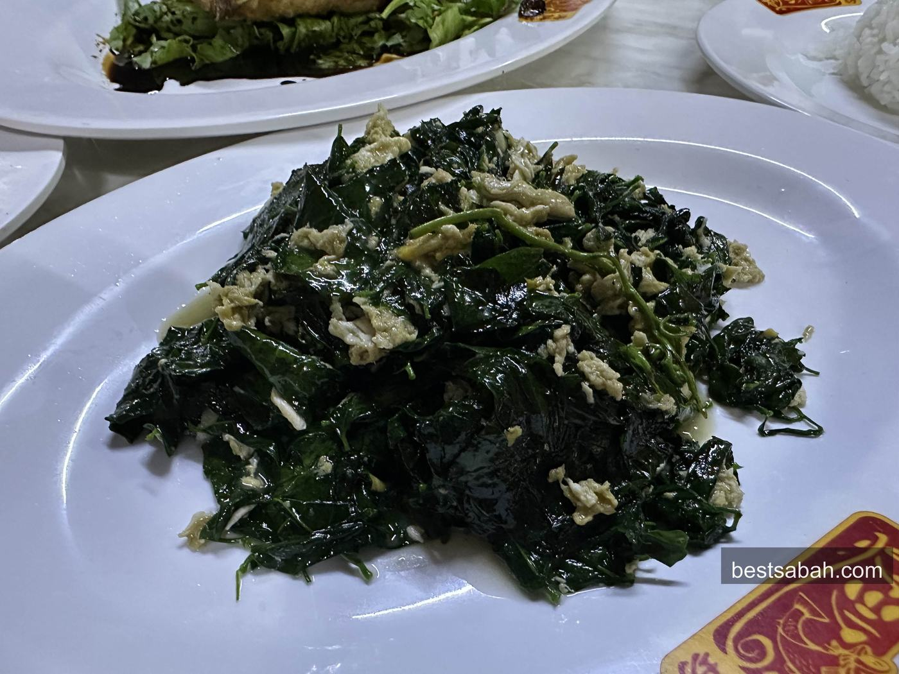
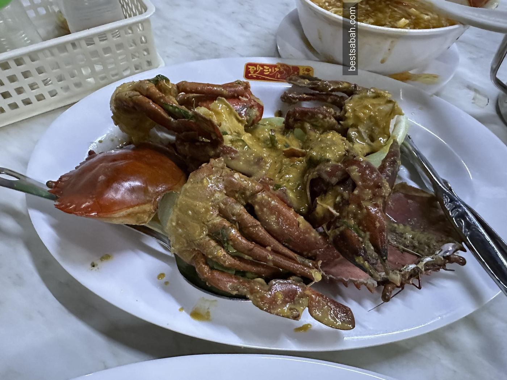
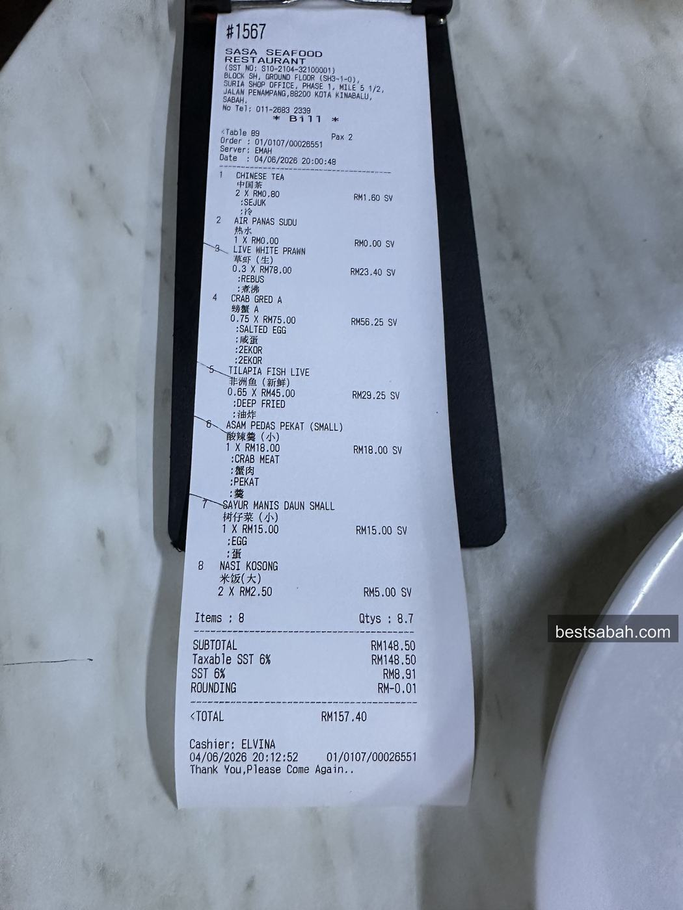
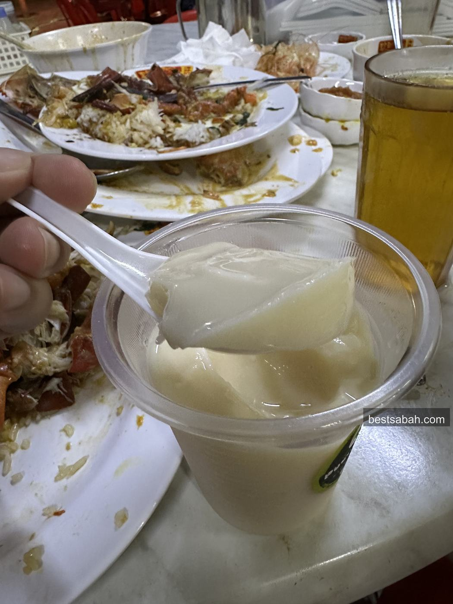

March 2026
Sasa Seafood Restaurant: Best Seafood in Kota Kinabalu?
Fresh from the tank, cooked fast, priced right. Sasa Seafood in Penampang is where KK locals go for seafood that actually delivers.

Sasa Seafood (砂沙海鲜舫) in Penampang. Packed most nights.
If you're looking for the best seafood in Kota Kinabalu, you've probably heard a few names thrown around. Some places are pricier. Smaller portions. Food that looks better than it tastes. Seafood is the thing Kota Kinabalu food is known for, and being surrounded by the sea, we're spoiled for options here in KK. But not all of them are worth your time.
Sasa Seafood is worth your time.
The Place

Red plastic chairs. Loud tables. Always packed.
Sasa Seafood Restaurant (砂沙海鲜舫) is in Penampang, about 15 minutes from KK city centre. If you're based near Imago KK, just head south and you'll get there. Not exactly town, but locals have been making that drive for years. That alone tells you something.
Pull up on a weeknight and you'll see a sea of people. Red plastic chairs packed. Families, big groups, birthday celebrations. The place is loud and alive. That's a good sign.
Parking is available along the road and in the surrounding area. It fills up on weekends so come a bit early or be prepared to walk a little.
The Seafood Tanks

Walk in, pick what you want, they cook it.
Before you even sit down, you walk past the live tanks. Crabs, clams, shellfish, all sitting there waiting. You pick what you want, they cook it. Doesn't get fresher than that.

What We Ordered

Four people, five dishes. Go hungry.
We came as a group of four. Hungry. Here's what landed on the table:
- Steamed prawns
- Fried tilapia
- Sabah vegetable with egg
- Salted egg crab
- Soup

Fresh, plump, straight from the tank.
The steamed prawns are the kind that remind you why fresh matters. No heavy sauce masking anything. Just clean, sweet prawn the way it should taste when it came out of a live tank an hour ago.

Crispy outside, soft inside. Good fish.
The fried tilapia comes out golden and crispy on the outside, soft in the middle. Solid. No complaints.

Order this. Seriously.
Now, the Sabah vegetable fried with egg. This one gets its own paragraph.
It sounds simple and it is. But that's the point. Local Sabah vegetable, wok-fried with egg, high heat, done right. The vegetable stays a little crunchy, the egg coats everything, and there's that slight char from the wok that you can't fake. It's one of those dishes that looks plain on paper but you end up going back for more every few minutes without realising it.
If you're visiting KK and you've never had this, Sasa is a good place to try it for the first time. Popular for a reason. Must order.

The salted egg crab. This is the one.
And then there's the salted egg crab. The centrepiece. The reason half the table gets quiet for a few minutes.
Fresh crab from the tanks, cooked in a rich salted egg yolk sauce. The sauce is thick, golden, slightly creamy, and coats every part of the crab. It's indulgent. It's messy. You will use your hands. You will not care.
Salted egg crab is not a cheap dish anywhere in KK, but at Sasa the portion and quality justify every ringgit. If you're going with a group, this is the one dish you do not skip. Just get it.
Go hungry. Order more than you think you need.
The Price

RM157.40 for four. Work that out.
RM157.40 for four people. That's roughly RM40 per head for a full seafood spread. In KK, for this quality and portion, that's genuinely good value. Some places in town will charge you double for half the food.
The Speed
Here's the thing that always gets me. The place is packed. I mean properly packed. And the food still arrives in under 15 minutes. Every time. I have no idea how they pull that off but they do.
Coconut Pudding

Don't skip this. Cool and smooth after a heavy meal.
End your meal with coconut pudding. It's a staple here in Sabah and Sasa does it well. Cool, smooth, light after a heavy meal. Don't skip it.
Practical Info
Address: G/F SH 3-1, 0, Jalan Penampang Lama, Penampang, 88300 Kota Kinabalu
Hours: 11am to 11:30pm daily
Phone: 011-2683 2339
Price: ~RM40 per head
Parking: Street parking nearby
Payment: QR, card, cash
Me and my friends have been coming here for birthdays, special occasions, regular Tuesday dinners. It's always a blast. The food is consistently good, the price never shocks you, and you leave full every single time.
If you're visiting KK and want one seafood meal that locals actually eat, this is it. It's not in the city centre but the drive is worth it. Really.
And if you want another solid KK food recommendation, Yii Siang ngiu chap in Inanam is another one locals have been loyal to for years.